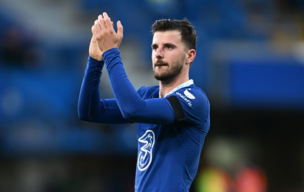
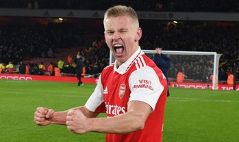

Маунт оцінив дебют Мудрика за Челсі

Зірковий півзахисник Челсі відзначив свою роль в адаптації українського вінгера до нового
клубу.
Лондонський Челсі офіційно придбав футболіста збірної України Михайла Мудрика у зимове трансферне вікно.
Півзахисник "синіх" Мейсон Маунт поділився думкою про підписання 22-річного гравця. За словами англійця, він
зробить усе, щоб допомогти українцеві адаптуватися в команді.
"Коли приходять нові гравці, я мушу піти і допомогти їм відчути себе бажаними. Незважаючи на те, що я ще
молодий, я один із найдосвідченіших у групі".
Маунт також оцінив дебют Мудрика за Челсі у матчі з Ліверпулем (0:0).
"Потрібно показувати новачкам, які їм тут раді, давати впевненість. І це видно, коли вони виходять на поле,
як Мудрик у суботу. Він був дуже впевнений. Михайло хоче показати, на що здатний разом із своїми новими
партнерами", - зазначив Маунт.
Наступний матч Челсі проведе у п'ятницю, 3 лютого. Суперником лондонської команди стане Фулхем у рамках
чемпіонату Англії.
Зазначимо, що Мудрик - найдорожчий зимовий трансфер в історії АПЛ.
Результати матів
- Шальке - Лейпциг 0:2
- Баварія - Кельн 0:4
- Герта- Вольсбург 2:2
- Динамо - Рапід 5:0
УКРАЇНЦІ ЗА КОРДОНОМ
Капітан без пов'язки. Зінченко закохав у себе всіх, трансформував ментальність Арсенала і осоромив легенду МЮ
football24